Mathematical helper terms¶
The following expressions are used in the following presentation of the various model equations:
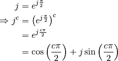
![\frac{1}{1 + (j \omega \tau)^c} &= \frac{1}{1 + \cos\left(\frac{c
\pi}{2}\right) + j \sin \left(\frac{c \pi}{2}\right)}\\
&= \frac{1 + (\omega \tau)^c \cos \left(\frac{c \pi}{2}\right) - j (\omega
\tau)^c \sin\left( \frac{c \pi}{2}\right)}{\left[1 + (\omega \tau)^c \cos
\left(\frac{c \pi}{2}\right) + j (\omega \tau)^c \sin\left( \frac{c
\pi}{2}\right) \right] \cdot \left[1 + (\omega \tau)^c \cos \left(\frac{c
\pi}{2}\right) - j (\omega \tau)^c \sin\left( \frac{c \pi}{2}\right)
\right]}\\
&= \frac{1 + (\omega \tau)^c \cos \left(\frac{c \pi}{2}\right) - j (\omega
\tau)^c \sin\left( \frac{c \pi}{2}\right)}{\left[1 + (\omega \tau)^c
\cos\left(\frac{c \pi}{2}\right) \right]^2 + \left[(\omega \tau)^c
\sin\left( \frac{c \pi}{2}\right) \right]^2}\\
&= \frac{1 + (\omega \tau)^c \cos \left(\frac{c \pi}{2}\right) - j (\omega
\tau)^c \sin\left( \frac{c \pi}{2}\right)}{1 + 2 (\omega \tau)^c \cos
\left(\frac{c \pi}{2}\right) + (\omega \tau)^{2c}}](_images/math/0ce2a804c1d0cd8291592090353465f3fce5a48c.png)
![\frac{\partial}{\partial c} (\omega \tau)^c &= \frac{\partial}{\partial c}
e^{\ln (\omega \tau)^c} = \frac{\partial e^{c \ln (\omega \tau)}}{\partial
c} = \ln (\omega \tau) \cdot e^{c \ln (\omega \tau)} = \ln (\omega \tau)
(\omega \tau)^c\\
\frac{\partial (\omega \tau)^{2 c}}{\partial c} &= 2 \ln (\omega \tau)
(\omega \tau)^{2 c}\\
\frac{\partial}{\partial c} \left[(\omega \tau)^{c} \sin \frac{c \pi}{2}\right] &= \ln (\omega \tau) (\omega
\tau)^c \sin \frac{c \pi}{2} + (\omega \tau)^c \cos \left(\frac{c \pi}{2}\right)
\frac{\pi}{2}\\
\frac{\partial}{\partial c} \left[2 (\omega \tau)^c \cos \frac{c \pi}{2} \right] &=
2 \ln(\omega \tau) (\omega \tau)^c \cos \frac{c \pi}{2} - 2 (\omega \tau)^c \frac{\pi}{2} \sin \frac{c \pi}{2}](_images/math/ee0e819bcd925d42645eb2882f43c6c739f42079.png)
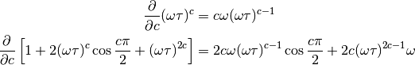
Partial derivatives respect to  :
:
Remember:
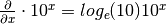
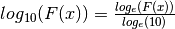
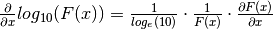
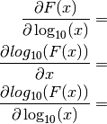
The following expressions are used in the following presentation of the various model equations:
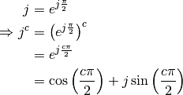
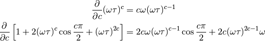
Partial derivatives respect to :
Remember:
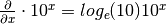
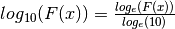
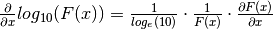
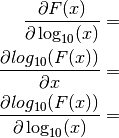